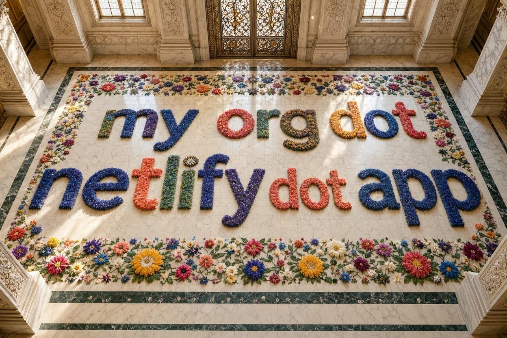

One Cohesive System Instead of Fragmented Tools
Keep member records, action steps, feedback and permissions connected in one place.

Core Building Blocks
Most growing groups rely on a patchwork of spreadsheets, messaging apps, forms and shared documents. Information gets duplicated, responsibilities blur, and bringing in new helpers becomes harder as the group expands.
The system replaces that patchwork with connected building blocks designed for practical day-to-day coordination:
- Connected profiles and relationships: Track people, teams and entities along with how they relate to one another, rather than isolating names in static rows.
- Multi-step tasks and guided flows: Break work or onboarding into clear stages so members know what to do next and progress stays visible.
- Surveys that trigger action: Gather input, check understanding or onboard recruits and route people into the right follow-up steps automatically.
- Granular permissions and safety: Let active members and teams take real initiative within clear boundaries, with controls that protect data and changes from mistakes or misuse.
- Your own independent instance: Each customer organisation runs its own dedicated instance with its own data and setup, rather than sitting inside someone else's rented platform.
Overview Video
See how independent organisations operate on the system.
Put It Into Practice
If you have decided that you would like to have your own independent organization system you can click the button below. That will take you to system HQ. It is the same system that you will have, and it is the system that runs the HQ. You just need an email address. You will be asked to pick a user name and a password. If your organization has a name it helps to put that in your user name. The system will then do the auto onboarding and it will let you identify yourself as a potential customer. In the current testing period there will be a manual (human) process to decide whether to grant you a free system of your own.
If you want to read more, click the home button.
If you want to send a message that can be done on the HQ link.